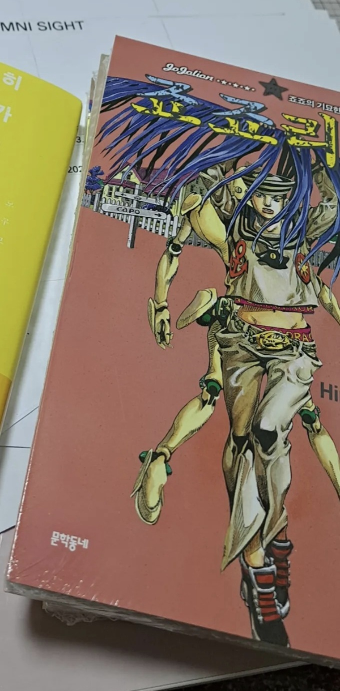
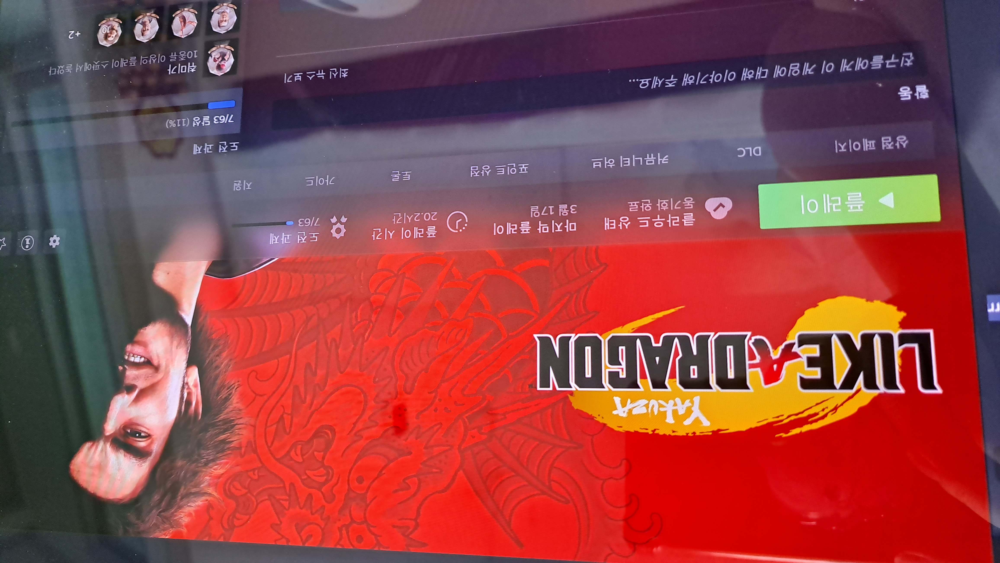
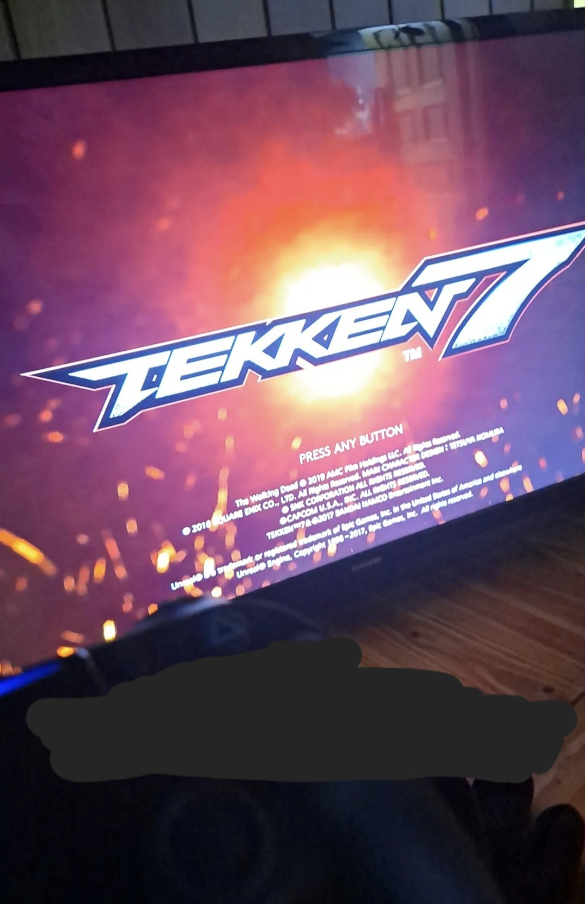
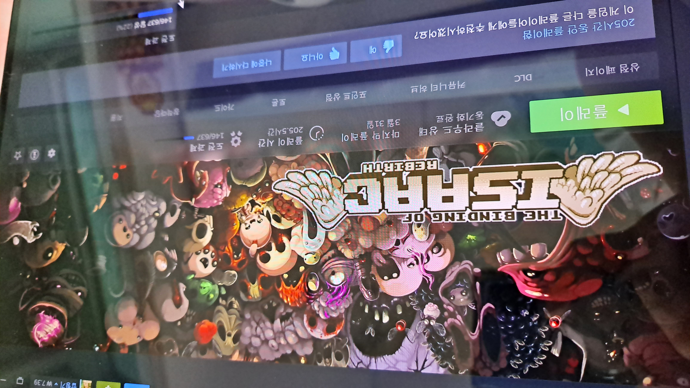
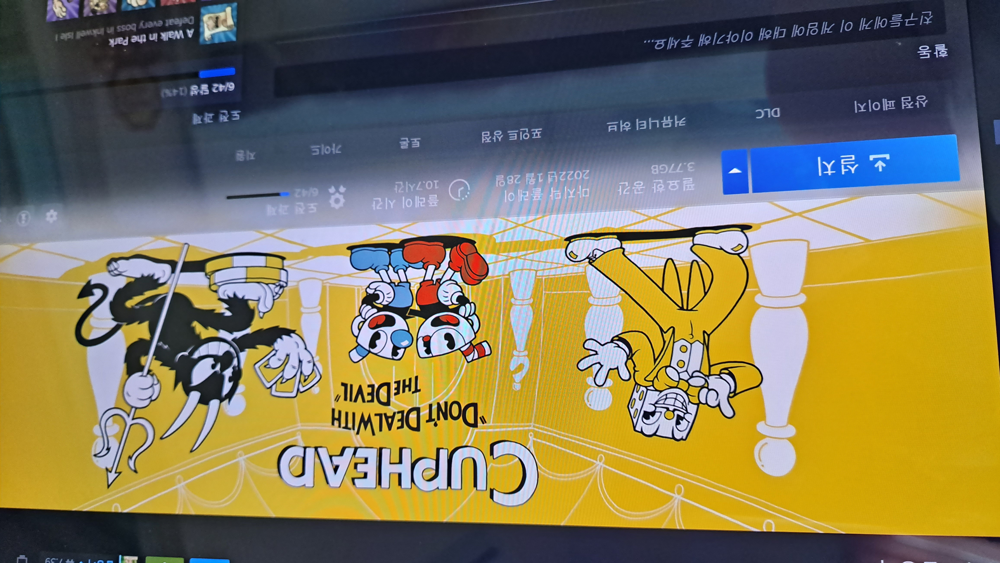
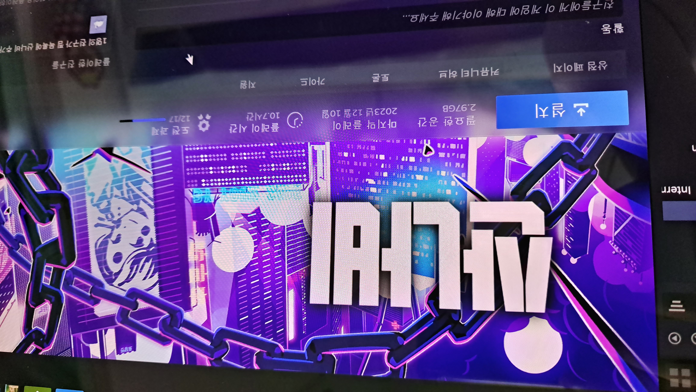

만화
죠죠리온
작가: 아라키 히로히코
줄거리 및 특징
줄거리
S시 모리오초. 지진 이후 갑자기 마을에 나타난 ❛벽의 눈❜이라 불리는 융기물 근처에서 히로세 야스호는 수수께끼의 청년을 발견합니다. 기억을 잃은 청년을 위해 함께 신원을 알아내기로 한 야스호. 하지만 불가사의한 현상들이 두 사람에게 일어나며 이야기가 시작됩니다.
특징
주역 및 조역들이 전부 전작의 주인공들의 성을 계승하고 있습니다. 시대는 도호쿠 대지진이 일어난 것과 같은 2011년. 다른 부들이 첫회부터 주인공의 정체를 설명한 데 비해, 이번 8부는 주인공의 정체가 누구인지, 적들의 정체는 무엇인지도 모르는 상태로 시작하는 등 작가님의 과거작인 바오 내방자에 가깝습니다.
평가
다른 죠죠들에 비해 팬들에게 언급이 없어서 큰 기대 없이 읽었었는데 다른 시리즈들과 다르게 액션 위주보단 추리물 성향을 띄고 있는 듯했습니다. 이 점이 장점이자 단점이라고 느껴졌던 게 죠죠의 매력적인 점 중 하나가 액션 컷들이었는데 이번 8부에선 특출난 액션 장면들이 크게 줄어들어 아쉽다는 생각이 들었습니다. 하지만 명확히 제시된 주인공의 목표와 중간 스토리들이 신선하다는 생각이 들어 재밌게 읽었습니다.
추천하는 사람
저처럼 아라키 선생님의 죠죠 시리즈를 평소 좋아하셨거나, 조금 독특한 그림체의 작품도 읽을 수 있다 싶으면 추천해 드립니다. 빠른 전개가 특징인 작품이라 답답한 스토리를 좋아하지 않으시다면 한 번 읽어보시는 걸 추천합니다.
모브사이코

작가: ONE
줄거리 및 특징
줄거리
초능력을 가지고 있지만 스승 밑에서 시급 300엔을 받고 제령 알바를 하고 있는, 인기가 없어서 고민인 중2 소년 카게야마 시게오의 이야기를 그리고 있습니다.
특징
다른 이능력물 장르와는 다르게 초능력에 크게 연연하지 않으며, 작가님의 다른 작품 ❝원펀맨❞의 작화는 무라타 작가님이 맡았지만 ❝모브사이코 100❞은 ONE 작가님이 모두 담당 하셨습니다.
평가
무라타 작가님의 작화도 정말 좋아하지만, ONE 작가님의 투박한 그림체에서 느껴지는 건조함을 정말 좋아해서 원작 만화를 아끼는 작품입니다. 스토리가 초능력에 집중하기보단 캐릭터들의 특징이나 성격에서 매력을 느낄 수 있었습니다. 특히 추하지만, 현실적인 레이겐 아라타카라는 캐릭터에게 정감이 갔습니다.
추천하는 사람
작가님의 이전 작품 ❝원펀맨❞도 재밌게 읽었다면 분명 ❝모브사이코 100❞도 재밌게 읽을 것이라 장담합니다. 복잡한 구조의 세계관 만화들과는 다르기에 심플한 스토리로 편하게 감상하실 수 있을 것으로 생각합니다.
사카모토 데이즈

작가: 스즈키 유우토
줄거리 및 특징
줄거리
전설의 킬러라 칭송받던 남자 사카모토 타로. 은퇴 후 살이 찌고, 아내와 함께 동네 슈퍼를 운영합니다. 전직 전설의 킬러를 위협하는 존재들로부터 평범한 일상을 지키는 액션 코미디입니다.
특징
유쾌한 일상 코미디와 진지한 범죄 느와르가 혼재된 독특한 분위기가 특징입니다. 다소 거친 작화지만 주간 연재에도 작화의 질이 무너지지 않고 있으며, 짧고 빠른 템포의 전투가 특징입니다.
평가
시원한 액션과 연출력이 엄청납니다. 사카모토 타로라는 캐릭터보단 아사쿠라 신이 주인공에 더 가깝게 느껴졌습니다. 아직 애니메이션이 안 나온 작품이지만, 많은 팬을 보유하고 있는 작품입니다.
추천하는 사람
계속 언급하고 있지만 액션 연출이 정말 뛰어난 작품이기에 배틀 액션물을 좋아하시면 적극 추천합니다. 묘사 또한 섬세하게 그려져 꼼꼼히 볼 수록 재미 요소가 많아지는 작품입니다.
여학교의 별

작가: 와야마 야마
줄거리 및 특징
줄거리
어느 여학교 2학년 4반 심상찮은 학생들과 만만찮은 담임 선생님의 엉뚱하고 사랑스러운 일상이야기를 담고 있습니다.
특징
개그 학원물 장르로, 호시 미쓰히코 선생님을 주인공 시점으로 여학교에서 일어나는 일을 담고 있습니다.
평가
실제로 여중·고에서 일어날 법한 일들을 담아 공감을 일으켜 웃긴 장면들이 많았습니다.
추천하는 사람
옴니버스 형식의 만화를 즐기거나 타 작품 ❝사이키 쿠스오의 재난❞ 같은 느낌의 만화를 재미있게 읽으셨다면 이 작품 또한 추천해 드립니다. 저도 여중·여고를 졸업하여 공감이 가는 장면들이 정말 많았습니다.
게임
용과같이7 빛과 어둠의 행방
줄거리
2001년 1월 1일, 동성회의 3차 단체 「아라카와조」에 소속된 야쿠자 카스가 이치반은, 조장 아라카와 마스미에게 이인자 사와시로 죠가 저지른 죄를 뒤집어 써달라는 요청을 받아들여 출두를 결심합니다. 사랑하는 조직을 위해, 존경하는 아버지를 위해, 카스가는 18년에 이르는 힘든 징역살이를 보내고, 2019년에 드디어 출소합니다. 그러나 출소한 카스가를 마중 나온 이는 아무도 없었습니다. (중략)
평가
이전 시리즈들과는 다르게 라이브 커맨드 RPG 배틀로 전투 시스템을 변경하여 처음 접하는 사람들도 쉽게 플레이할 수 있도록 변경되었습니다. 개인적으로는 전 시리즈 전투형식을 더 좋아하지만 ❝용과 같이❞라는 작품을 정말 좋아하기에 이번 게임 또한 즐겁게 플레이하였습니다.
추천하는 사람
저처럼 ❝용과 같이❞ 시리즈를 좋아하는 팬이거나 야쿠자를 배경으로 한 느와르 작품을 좋아하신다면 추천해 드립니다. 하지만 가격대가 나가는 작품이다 보니 게임에 돈을 쓰는 걸 선호하지 않으시면 비추천합니다.
철권7
줄거리
세계에 선전포고를 날리며 대규모 전쟁을 시작한 미시마 재벌. 그 미시마 재벌에 대항하기 위하여 반미시마 재벌을 내걸고 일으킨 G사. 2대 세력에 의한 싸움이 점점 격해지는 가운데 미시마 재벌의 수령인 카자마 진이 돌연 행방불명이 되고 맙니다. (중략) 미시마 헤이하치와 미시마 카즈야의 세계를 넘나들며 벌이는 부자간의 싸움을 다루고 있습니다.
평가
워낙 유명한 작품이라 오락실에서 한 번은 해본 적 있는 게임이거나 안 해봤더라도 이름은 들어봤을 게임입니다. 이 게임은 다른 게임들과 다르게 저는 플레이스테이션으로 구매하였고 콘솔로 즐기고 있습니다. 뿌리가 깊은 배틀 게임이다 보니 시원한 액션 사운드와 움직임이 특징입니다.
추천하는 사람
시원한 액션 게임을 좋아하신다면 구매해서 해보는 것이 아니더라도 동네 오락실에서 즐기는 것도 추천해 드립니다. 철권 시리즈만의 스토리도 있어서 스토리도 함께 즐길 수 있습니다.
바인딩 오브 아이작
줄거리
표면적으로는 종교에 미친 아이작의 엄마가 아이작을 죽이려 하자 지하실로 도망친 아이작이 겪는 이야기지만, 대부분의 결말들이 무언가를 암시만 하고 있을 뿐이지 충분히 단서가 주어지지 않았습니다. 공식적인 결말은 없지만, 여태까지의 엔딩을 종합한 유저들의 추측들이 나오고 있습니다.
평가
종교적인 요소가 가득한 호러 인디 슈팅 게임입니다. 제가 좋아하는 게임 중 하나이며, 매우 어려운 난이도가 특징입니다. 고어한 분위기가 독특하고, 게임을 클리어하면 할수록 나오는 엔딩들을 수집하는 재미도 있습니다.
추천하는 사람
3D 게임을 선호하지 않으시거나 도트게임을 좋아하신다 하시면 추천해 드립니다. WASD와 방향키 등 키보드로만 플레이하는 마우스가 필요 없는 게임이기에 노트북으로도 어디서든 편하게 즐기실 수 있습니다.
컵헤드
줄거리
도박 중독 형제, 컵헤드와 머그맨이 악마에게 빚을 갚기 위해 다른 채무자들의 영혼을 걷는 일수꾼이 되는 이야기입니다.
평가
Rubber Hose 스타일의 그림체로 고전 애니메이션, 게임들을 생각나게 하는 게임입니다. 어려운 난이도를 자랑하고 있으며, 애니메이션 전부 디지털로 그린 게 아닌 애니메이터들이 직접 아날로그 형식으로 작업했고, 배경음악 또한 직접 연주한 것으로 유명합니다.
추천하는 사람
고전 디즈니 풍 그림체를 좋아하시거나, 런앤건 스타일의 게임을 좋아하셨다면 추천해 드립니다. 하지만 한 스테이지를 클리어하는 것조차가 고난이라 장시간 플레이하게 되니, 플레이하게 되실 경우 시간을 잘 조정하며 즐기시길 바랍니다.
리썰컴퍼니

게임 방식
3일 동안 건물에 들어가 물건을 가져와 팔고 그 금액이 실적에 미달할 경우 해고당하는 형식의 게임입니다. 혼자서도 즐길 수 있고, 다른 플레이어들와도 즐길 수 있습니다.
평가
특유의 스산한 분위기가 공포 게임 느낌을 조성하며 온라인으로 친구와 즐기기 좋은 게임입니다. 1인 제작으로 유명한 게임으로, 개발자가 20대 초인 것도 놀라운 점입니다. 게임 사운드가 현실감 넘친다는 게 특징입니다.
추천하는 사람
높은 가격도 아니라 부담 없이 구매할 수 있고, 게임을 같이할 친구들이 있고, 공포 분위기의 게임을 좋아하신다면 적극 추천해 드립니다. FPS 게임처럼 총을 쏘며 적들과 싸우는 게임이 아니라 물건을 주워 함선까지 살아 돌아와 물건을 파면 되는 형식의 게임이라 크게 부담 없이 즐길 수 있을 거로 생각합니다각합니다.
산나비
줄거리
기계팔로 무장한 퇴역 군인은 초거대 재벌의 부패한 사유 도시를 오릅니다. 도시에 숨겨진 비밀을 밝혀내기 위해, 그리고 ❛산나비❜를 찾아내 복수하기 위해. 조선 사이버펑크 액션 게임입니다.
평가
무려 국산게임이며, 사이버펑크 디스토피아를 배경으로 펼쳐지는 역동적이고 스타일리쉬한 2D ❝사슬 액션❞ 어드벤처 플랫포머 게임, 산나비입니다. 스토리 중점의 게임이며, 도트 게임이지만 게임 배경이나 캐릭터 움직임 등 게임 퀄리티에 매우 놀랐습니다.
추천하는 사람
국산 게임에 관심이 있고, 반전 있는 스토리 형식의 게임을 좋아하신다면 추천합니다. 이 게임도 부담 없는 가격이고, 난이도도 선택할 수 있기에 게임을 평소에 잘 안 하셨더라도 어렵지 않게 즐길 수 있을 거로 생각합니다.